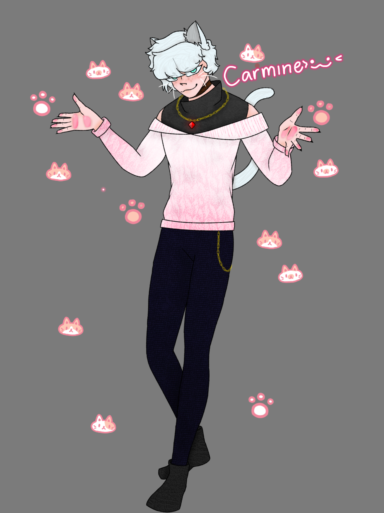

Carmine

Basics
Name
Carmine Dutchess
Username
Dutchess
Guild
Feline Fatale
Gender / Pronouns
Male, He/They
Age
24
Orientation / Sexuality
Gay
Availability
Taken by Haruno
Personality
At first glance, Carmine can be seen as rude and hot-headed. He's quick to get fired up. But once your get past his tough exterior, he's very soft. He's a motivated person and genuinely enjoys doing what he loves. He does not like ideals being forced upon him, and he likes to do as he pleases.
Character Stats
Race / Class
Neko
Level
24
Extra Extremities
Cat ears and Tail
Abilities
- Increased Speed
- Can jump high
- Increased Hearing
Weaknesses
Special Skills
His voice can shift and change at will, imitating anything he has previously heard.